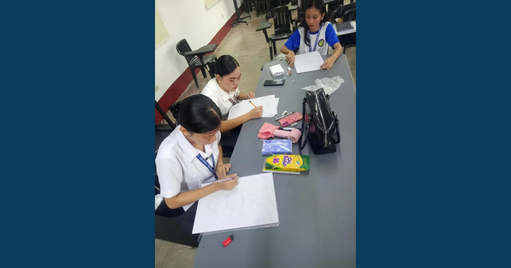

Where Creativity Meets Statistics

The MCNP–ISAP Research and Development Center conducted the Statistical Month 2026 Poster-Making Activity on September 23, 2026. Participants transformed statistical concepts into creative visual stories that highlighted the value of data in research and informed decision-making.
Read full article